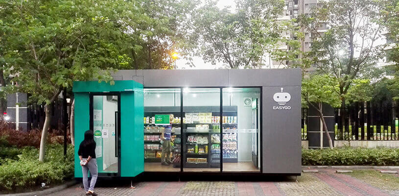

无人便利店「EasyGo」完成 2000 万元天使轮融资
这是 EasyGo 未来便利店两个月内的第二次融资。2017 年 6 月，EasyGo 完成了 500 万元的种子轮融资。王牧牧告诉 36氪，目前已有国内某著名投资机构和大型地产商正与 EasyGo 未来便利店接洽，拟进入新一轮 Pre-A 融资。
风口上的无人便利店赛道玩家云集，一周之内，F5 获得了 3000 万元 A＋ 轮融资，缤果盒子完成了超 1 亿元 A 轮融资，亚马逊、罗森、阿里巴巴等巨头也纷纷试水。对于入局者来说，风口上的机会可以被不断放大，但与此同时，这又好比一局德州，你手握非同花的 8 和 10，对手在翻前 raise 了 10 倍，你还 call 嘛。

36氪接触到的 EasyGo 未来便利店于今年年初启动，面向中高端小区，采用可移动的“盒子”形态来搭建无人便利店，目前在广州越秀区中华广场开出了第一家 Beta 版门店。创始人王牧牧告诉 36氪，广州的 Beta 门店在 6 月份正式运营，数据方面，每天流水在 1500-2000 元左右，SKU 在 500 左右，客单价约 17-19 元，以标品售卖为主，店内 70% 的商品是进口商品，毛利约 30%。
EasyGo 的结算方案采用“RFID＋小程序”的模式，店内没有 RFID 扫描收银台，扫描区设在店门附近，用户挑选完商品后，在店门位置站立数秒，系统会完成结算。随后用户通过微信小程序来完成付款。“人脸识别、生物识别目前的商用效果都不太好，会对用户体验造成比较大的打击，所以目前 EasyGo 还是采用了 RFID 技术来解决。未来如果技术成熟了，EasyGo 也会考虑选择替代方案。“
无人便利店诞生之初，市场接收到的信息普遍是，这是一个可以大大降低传统便利店成本的新物种。一家 60 平米左右的传统便利店，月租金在 3 万元左右，通常需要配备 6 名员工，人工成本在 2.4 万元左右，此外还有加盟费、店铺转让费和装修费用等。
EasyGo 的成本结构中，盒子造价视占地面积而定，10-15 平米的盒子造价在 8-10 万元左右，其中包括了识别设备、摄像头等。地租方面，目前 EasyGo 采取和物业收益分成的模式，比例约为 5%－8%，不需要缴纳“进场费”。运维方面，EasyGo 测算的数据是 4 个人可以维护 30 个盒子，盒子日常安保由小区物业来负责，而补货系统数据则和货品供应商之间打通，供应商会根据提示进行补货，EasyGo 则让渡部分利润给供应商。
RFID 成本居高不下是人们普遍担心的问题，EasyGo 采用的高频 RFID 标签成本也在 5、6 毛左右，标签由供应商直接粘贴。对此，王牧牧表示，如果店内卖的商品客单价较低，RFID 标签成本占去 10%，那确实没有太大意义，而 EasyGo 的选品都是客单价较高的进口商品，所以 RFID 标签的成本相对合理。
”无人便利店的核心不是节省成本，而是一种以消费者为中心的新零售业态。“王牧牧认为，无人便利店的形式只是”表面功夫“，背后需要搭建全套的数据后台，连通微信支付，使得所有的商品都有数据沉淀，从而知道消费者更喜欢什么东西，让供应商通过数据来对选品、货架摆放等进行自我调整。”盒子铺得足够多之后，EasyGo 会调整选品策略，使得零售可以从过去供应商到消费着的单向模式，变成可交互的双向模式。“
此外，EasyGo 还认为，无人便利店的运营考验的是细节，尤其是选品和选址方面。例如南方需要考虑防热和防水的问题，盒子底部就要整体抬高 15 公分，并且加装隔热层和反光防热玻璃。而选品方面，不同地区会有口味、品牌等偏好差异，“EasyGo 在广州采用的商品供应商也是沃尔玛的供应商，拓展到其他城市后，选品定调会由了解当地市场的供应商来衡量。”
EasyGo 团队在启动之初完成了个人投资者提供的约 500 万元种子轮融资，目前正进行天使轮融资。团队计划今年以直营的方式开设 100 家无人便利店，完成 100 家店的铺设后再开放加盟。本月 EasyGo 会新开五家门店，选址布局在万科地产、新世界地产、碧桂园酒店、We 影院等区域。
团队方面，联合创始人王牧牧曾就职于 21 世纪经济传媒集团、广州日报传媒集团，后任快快优车高管；产品负责人孔志亮曾供职华为，在 IT 开发类、大型 CMS 软件包类项目上有成功管理经验；供应链负责人高庆良为一级进口商品代理商，在广州、香港有仓库，是风信子、岭南海淘等多家连锁跨境商品卖场的长期供货商；技术负责人卫雪颖拥有多年 RFID 技术物联网经验，曾为多家国际企业提供 RFID 物品追踪解决方案。